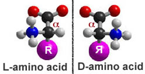
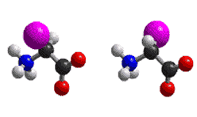
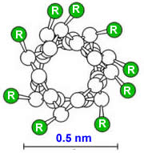

_
_
We have already mentioned proteins a number of times, since there are few biological processes that do not rely on them.
Proteins derive their name from the ancient Greek sea-god Proteus who, like your typical sea-god, could change shape. The name acknowledges the many different properties and functions of proteins.
Proteins can act as catalysts (enzymes) and regulators of chemical reactions - we have already seen how proteins act to regulate transport across membranes. Proteins control the expression of genes, how genes respond to internal and external signals, and the replication of the genetic material.
Proteins can act as structural components, determining both the shape and mechanical properties of cells and tissues. They can be motors, responsible for movements within cells and the movement of cells, tissues and the organism as a whole.
Proteins are composed of α-amino acids linked together by peptide bonds into polypeptide chains.
We can think of an amino acid as a modified form of methane (CH4). Instead of four hydrogens attached to the central C, there is one H, an amino group (-NH2), a carboxylic acid group (-COOH), and a final, variable (R) group attached to the central “α-carbon”.
The various R-groups are often referred to as “side-chains”.
The four groups attached to the α-carbon are arranged at the vertices of a tetrahedron.
If all four groups attached to the α-carbon are different from one another, as they are in all amino acids except glycine, the amino acid can exist in two possible stereoisomers, which are known as enantiomers.
_
Figure: Amino acid enantiomers
Enantiomers are mirror images of one another and are termed the L- and D- forms.
Only L-type amino acids are found in proteins, even though there is no obvious reason that proteins could not have also been made using both types of amino acids, or using D-amino acids.
It is not that D-amino acids do not occur in nature, or in organisms, they do. They are found in biomolecules, such as the antibiotic gramicidin, which is composed of alternating L-and D-type amino acids - however gramicidin is synthesized by a different process than that used to synthesize proteins.
It appears that the universal use of L-type amino acids is yet another example of the evolutionary relatedness of organisms (it is a homologous trait). Even though there are hundreds of different amino acids known, only 19 amino acids and one imino acid, proline, are found in proteins.
These amino acids differ in their R-groups.
Some of these R-groups are highly hydrophobic, some are hydrophilic, and some of the hydrophilic R-groups are positively or negatively charged at physiological pH.
The different R-groups provide proteins with a range of chemical properties.
Building a polypeptide:
As we noted for nucleic acids, a polymer is a chain of subunits, monomers, linked together by chemical bonds. The bond between two amino acids is known as a peptide bond. Two amino acids, joined together by a peptide bond, is known as a dipeptide.
An amino acid polymer is known as a polypeptide. A polypeptide can be composed of 20 different possible monomers that can, in theory, be linked together in any imaginable order.
The formation of a peptide bond involves what is known as a condensation or sometimes a “dehydration” reaction. In a condensation reaction two molecules are joined together and a molecule of water is released.
In a hydrolysis reaction, the reverse occurs. The addition of a water molecule is associated with splitting the original molecule into two parts.
In the case of both nucleic acids and polypeptides, polymer assembly involves a condensation reaction (with the release of water), while polymer disassembly into monomers involves a hydrolysis reaction (with water as a reactant).
Combining amino acids into a polypeptide can produce a very large number of possible polypeptides. There are 20100 possible different polypeptides that are 100 amino acid residues long. Many biological polypeptides are much longer!
During the synthesis of a polypeptide, an amino acid is attached to the C- or carboxyl terminus of the existing chain. This generates an unbranched, linear polymer.
The peptide bond has a number of characteristics that are critical in determining how polypeptides behave.
Although drawn as a single bond, the peptide bond behaves more like a double bond.
While there is free rotation around a single bond, rotation around a peptide bond is constrained (like a double bond).
Proline peptide bonds are found in the cis configuration ~100 times as often as those between other amino acids (watch the video below to understand cis vs. trans peptide bond configurations).
The carbonyl oxygen (-C=O) acts as a H-bond acceptor, while the amino hydrogen (-N-H) acts as a H-bond donor.
There is no H-bond donor in the proline peptide bond and the presence of proline leads to a bend or kink in the polypeptide chain.
In the molecular level simulation below, you cannot see the water, but you can watch this single polypeptide chain fold; the spinning of side chains around single bonds is very clear.
The colors indicate where an animo acid is along the polypeptide chain.
Notice that molecular movement continue even after the molecule reaches its compact (presumably native) state.
Questions to answer
Questions to ponder
Water, polypeptide synthesis and folding:
Were it not for the presence of hydrophobic R-groups, all polypeptides would assume an extended configuration in water. H-bond donors and acceptor groups within the polypeptide backbone would form H-bonds with each other and, because there are so many of them, with water molecules.
Typical polypeptides have all of the different R-groups in various proportions. We write the amino acid sequence of a polypeptide from its N- or amino terminus to its C- or carboxyl terminus, with the N-terminus to the left and the C-terminus to the right. The sequence of amino acid residues, that is what is left of the amino acid once it is part of the polypeptide, along the length of a polypeptide from its N- to its C-terminus, is known as its primary structure.
A number of the amino acid R-groups are hydrophobic. Their presence makes an extended configuration for the polypeptide energetically unfavorable.
Very much like the process that drives the assembly of lipids into micelles and bilayers, a typical polypeptide in aqueous solution will collapse onto itself in order to remove as many of its hydrophobic residues from contact with water as possible (otherwise, water molecules would be organized around the hydrophobic residues, leading to a decrease in entropy!)
It is a basic assumption of structural biology that the final folded state of a polypeptide is determined by the sequence of amino acids along its length, and that this final structure is the state of lowest, or close to the lowest, energy.
Protein structure is commonly presented in a hierarchical manner. While this is an over-simplification, it is a good place to start.
As it is being synthesized, the process known as translation, the polypeptide chain begins to fold. We can think of the folding process as a walk across an energy landscape.
The goal is to find the lowest point in the landscape, the energy minimum of the system. This is generally assumed to be the native or functional state of the polypeptide.
The first step is the movement of hydrophobic R-groups out of contact with water. This drives the collapse of the polypeptide into a compact and dynamic "molten globule".
The path to the native state is not necessarily a smooth or predetermined one.
The folding polypeptide can get “stuck” in a local energy minimum; there may not be enough energy (derived from thermal collisions) for it to get out again.
If a polypeptide gets stuck, there are mechanisms to unfold it and let it try again to reach its native state. This process of partial unfolding is carried out by proteins known as chaperones.
Some amino acid R-groups contain carboxylic acid or amino groups, and so also act as weak acids and bases.
Depending on the pH of the solution they are in, these groups may be protonated or unprotonated (that is, charged).
Whether a group is charged or uncharged can have a dramatic effect on the structure, and therefore the activity, of a protein.
_
Figure: Protein conformation is influenced by the environment.
By regulating pH, an organism can modulate the activity of specific proteins. There are, in fact, compartments within eukaryotic cells that are maintained at low pH in part to regulate protein structure and protein activity.
Secondary structure features:
All polypeptides share a common backbone structure made up of peptide bonds. It is therefore not surprising that there are common patterns in polypeptide folding.
The first of these to be recognized, the α-heIix, was discovered by Linus Pauling and Robert Corey, and reported in 1951.
Figure: Linus at age 5
This was followed shortly thereafter by their description of the β-sheet.
The forces that drive the formation of the α-helix and the β-sheet will be familiar. They are they same forces that underlie water structure.
In an α-helix and a β-sheet, all of the possible H-bonds involving the peptide bond’s donor and acceptor groups are formed within the polypeptide.
This stabilizes the structure.
In an α-helix , the R-groups point outward from the long axis of the helix.

Figure: Molecular structure of an alpha-helix
In β-sheets, the H-bonds between the peptide bond donor and acceptor groups are made between either parallel or anti-parallel polypeptide chains.
These are anti-parallel ß-sheets
The R-groups point out of and into the plane of the sheet.
A key factor that determines the specific details of polypeptide folding are the interactions between R-groups, not only with one another but with water and dissolved ions.
In a water-soluble polypeptide, most but not necessarily all of the surface R-groups will be hydrophilic. Hydrophobic groups will tend to be buried in the polypeptide’s interior.
Some polypeptides are inserted into membranes. In these polypeptides, hydrophobic R-groups on the surface of the folded polypeptide will interact with the hydrophobic interior of the lipid bilayer. (Does that make sense to you, thermodynamically?)
Other factors in protein structure: In addition to hydrophobic/hydrophilic effects, ionic interactions between acidic and basic R-groups, van der Waals interactions and H-bonds also play an important role in determining the tertiary or three dimensional structure of the polypeptide.
Proteins can include non-amino acid-based components, known generically as co-factors. A protein minus its cofactors is known as an apoprotein. Together with its cofactors, it is known as a holoprotein. Generally, without its cofactors, a protein is inactive (and often unstable).
Cofactors can range in complexity from a single metal atom to quite complex molecules, such as vitamin B12. The retinal group of bacteriorhodopsin and the heme group (with its central iron ion, are also a co-factors.
In general, a gene does not necessarily encode a protein, but rather a polypeptide. A protein is a functional entity. In many cases a protein is composed of multiple polypeptides.
For example, the membrane bound ATP synthase we talked about previously is composed of 8 different types of polypeptides, many of which are present in multiple copies assembled to form the final, functional protein.
Figure: ATP synthase is a complex of multiple polypeptide subunits
A protein that contains multiple polypeptides, whether of the same or different types, is said to have a quaternary structure.
There are also higher levels of polypeptide organization. For example, a particular polypeptide may be a component of a number of different proteins.
Questions to answer
Questions to ponder
{kind=link}